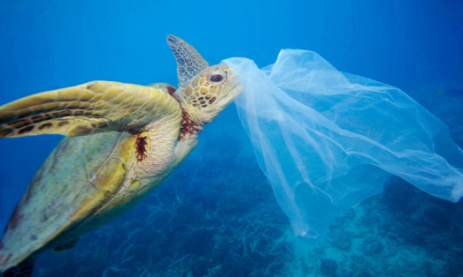

Why Sea Turtles?
Do you know Sea Turtles in the Pacific Ocean are increasingly in danger beacuse of plastic pollution? These beautiful creatures are crucial for the Oceanic ecosystem. Our organization’s goal is to increase awareness around this issue and build resources to fight it.

"Nearly all species of sea turtle are now classified as endangered, with three of the seven existing species being critically endangered. WWF is committed to stopping the decline of sea turtles and works for the recovery of the species." -WWF
How Are We Helping
We’ve created a list of useful articles and resources for you to dive deeper into this issue, and learn how you can reduce your reliance on plastic. We also created products whose proceeds will go to a non-profit called Sea Turtle Recovery which helps rescue and care for sea turtles. We also want to encourage people and give them tips to reduce their reliance on plastic products.
Link to non-profit: https://seaturtlerecovery.org/
Sea Turtle Recovery - NJ's only sea turtle hospital!
"Sharp plastics can rupture internal organs and bags can cause intestinal blockages
leaving turtles unable to feed, resulting in starvation. Even if they survive, consuming
plastic can make turtles unnaturally buoyant, which can stunt their growth and lead to
slow reproduction rates."
-WWF